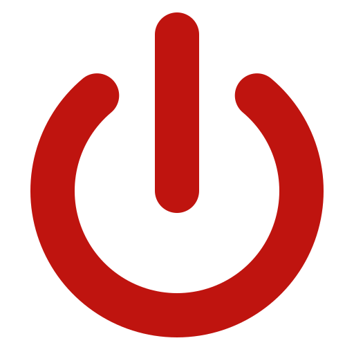
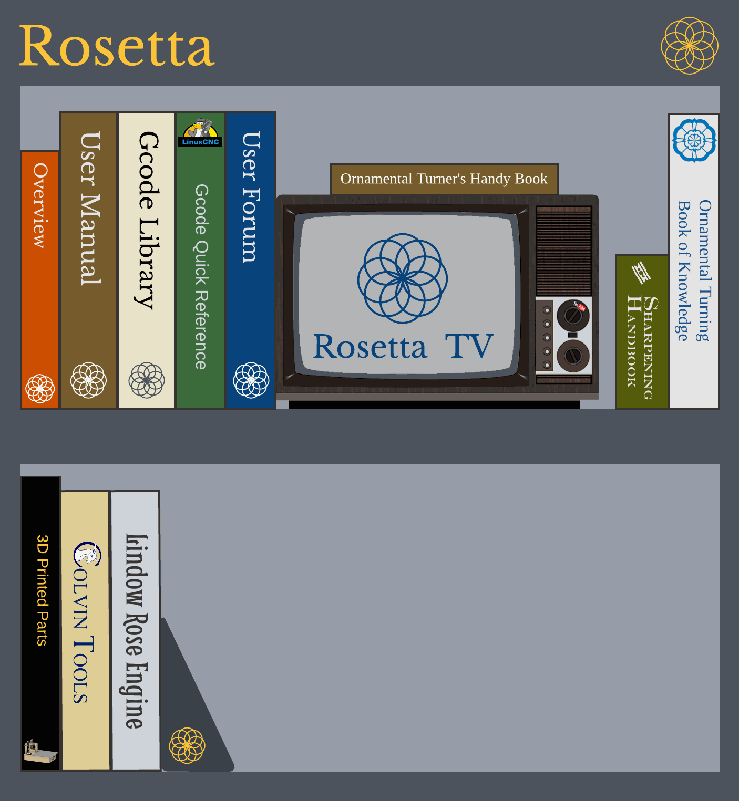
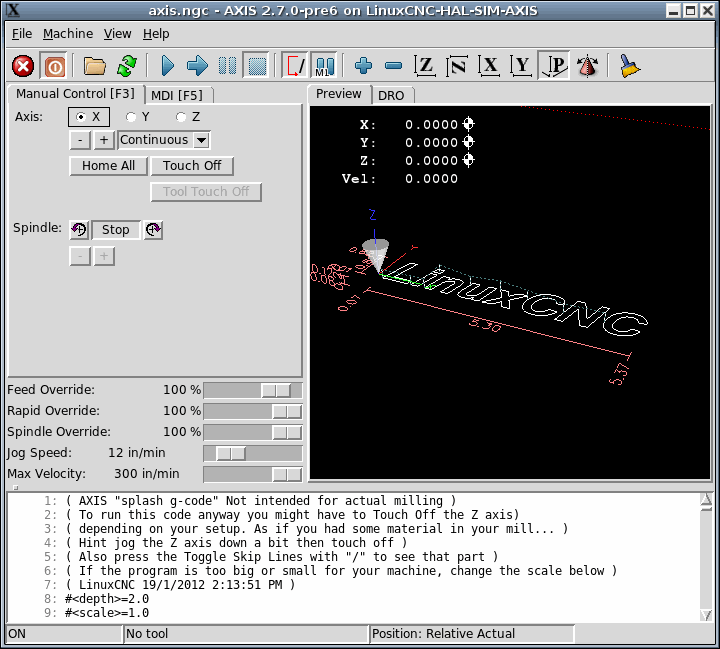
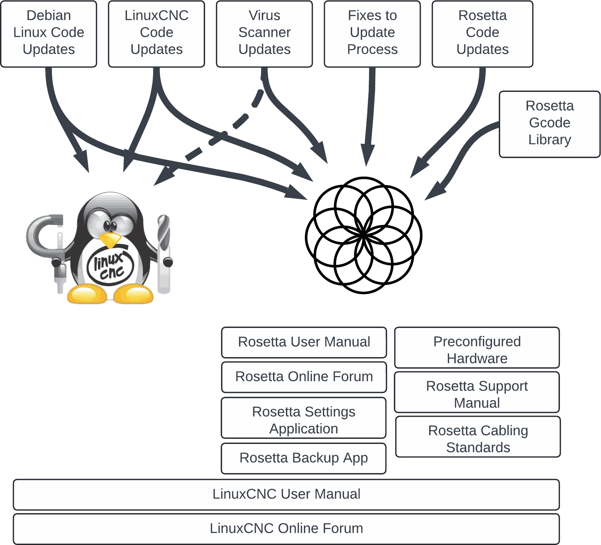

Rosetta is not a single program; rather, it is a set of programs: some reside on the Rosetta system box(es), whilst others reside on an Internet site. Each program has its own job, its own icon, and its own entry on the Applications menu (click on Applications, then the arrow to the right of Rosetta).
The programs are related, but they are independent: each one is started on its own, and none of them starts the others.
Rosetta and Rosetta Settings, the two you use every day, also have icons on the desktop. So do the Rosetta User Manual and Rosetta Gcode Library (see Manuals on the Raspberry Pi and the Internet, below).
Knowing which program does what is the key to finding your way around the system. For example, if you are looking for a setting and cannot find it on the Rosetta screen, it is almost certainly in the Rosetta Settings program.
Programs on the System
| Rosetta | Rosetta Settings | Update Rosetta |
 The Turk's head |  The gear |  The green up arrow |
| What it is: the machine control. It starts LinuxCNC with the Rosetta screens. | What it is: the settings program. It tells Rosetta what is connected to the box, how each device should behave, and sets other options for the user’s preference. | What it is: the software updater. |
Use it to:
| Use it to:
There are links on many pages in this program to the relevant pages of this User Manual. This is meant to help you understand how to best set the values to achieve what you want. | Use it to:
This includes:
|
| Backup Rosetta | Rosette Designer | Geometric Chuck Designer |
 The USB Flash Drive |  The Rosette | The GeoChuck Design |
| What it is: a program for copying key user files to a USB flash drive. | What it is: a program for designing rosettes in software to test them. | What it is: a program for implementing a geometric chuck using software and stepper motors (usually attached to the cross slide). |
Use it to:
There is an option to restore these files in the | Use it to:
| Use it to:
|

Shut Down - used to shut the computer down properly before you switch the power off. (See also, Switching the System Off.)
Manuals on the Raspberry Pi and the Internet
These two manuals are installed on your Rosetta, so they can be used without an Internet connection, and each update of the Rosetta software brings their latest version. Open them with the Rosetta User Manual and Rosetta Gcode Library icons on the desktop, from Applications > Rosetta, or from the Help tab on Rosetta’s main screen. The same pages you find on the Rosetta system are also on the Rosetta website.
- User Manual - the documentation you are now viewing (on the Internet: https://rosetta.colvintools.com/Rosetta_User_Manual/).
- Gcode Library - a library of Gcode programs which should be useful to the ornamental turner (on the Internet: https://rosetta.colvintools.com/Rosetta_Gcode_Library/).
- These have been vetted and documented to assist you in using them.
- To use one of the Gcode programs, save it to your gcode library (we strongly recommend you use ~/linuxcnc/configs/Rosetta/gcode).
Websites on the Internet

Rosetta Library
These need an Internet connection. If your Rosetta isn’t connected, use another computer or a phone.
- Rosetta Library - the website for documentation about Rosetta (https://rosetta.colvintools.com). The manuals above, the forum and other references are all reached from this site.
- User Forum - a forum for exchanging information with other users of Rosetta (https://colvintools.com/Rosetta/Forum/index.php).
How Base LinuxCNC is Different from Rosetta
Rosetta is based on LinuxCNC with the Axis GUI. To that, we added programs and configurations which make LinuxCNC more useful for the ornamental turner. Graphically, you can see the difference in the images below.

Base LinuxCNC using the Axis GUI Rosetta (with the Expansion Box)
Rosetta (with the Expansion Box)Debian Linux - Both systems run on Debian Linux which is a very solid version of Linux, and which also allows for operation as a real-time operating system. Debian is an open-source software operating system developed and maintained by the Debian Project.
LinuxCNC - LinuxCNC (initially called Enhanced Machine Controller, or EMC2) was built by the U.S. National Institute of Standards and Technology in 1993 to reduce the cost for implementing an automation system for manufacturing.
- LinuxCNC implements a very powerful, standardized version of Gcode. The standard, RS274/NGC, is also defined by the International Standard, ISO 6983-1:2009. This enables you to develop your own Gcode programs and execute them on LinuxCNC.
- LinuxCNC is now an open-source software application which continues to be maintained and upgraded by a community of devotees.
More Than a Few Add-ons

LinuxCNC’s Tux (left) and Rosetta (right)
But there is more to it than that. We have tried to provide an environment for using the system which makes it easy for you to make great art.
- Debian Linux Code Updates - And as with other computer operating systems, updates are needed to Debian to keep it running.
- LinuxCNC Code Updates - also has updates over time.
- Virus Scanner Updates - LinuxCNC is considered very secure; however there are many bad players out there on the internet. We have chosen to add ClamAV to the Rosetta system as an extra measure of security. (This can be added to other LinuxCNC systems but is not by default.)
- Fixes to the Update Process - As with many operating systems, there are occasional issues encountered with the upgrade process (sudo apt update / sudo apt upgrade). When we encounter these, we add the fix for that issue into the Rosetta Upgrade program (the big green arrow) so that you do not have to research the needed actions. It may require you to run the Upgrade program twice, but the issue will be resolved for you.
- Rosetta Code Updates - We expect to provide updates over time. The Rosetta Upgrade program (the big green arrow) will pull these down to your system, and will make any updates to the on-board files for you. The on-board User Manual will also be updated so that it will match the code installed on your system, and the Gcode Library will also be udated with any newly published objects.
And Some Bases to Help Users
- Rosetta User Manual - the on-line user manual for Rosetta is provided for helping users of the system.
- Rosetta Support Manual - the on-line support manual for Rosetta is where we document a lot of technical details to keep those documents readily at hand.
- Rosetta User Forum - the on-line user forum for Rosetta is provided for helping users of the system.
- Rosetta Preconfigured Hardware - Being able to purchase an off-the-shelf system which you can plug in and immediately start using is a great option for the ornamental turner who does not want to get into building their own system.
- meets the application needs,
- can be sourced at reasonable costs, and
- can be provided by vendors reliably over time.
- Rosetta Cabling Standards - The standards for cabling we have selected help to reduce problems for the user, and eliminate the need to do your own research.
- Ease of use
- Secure connections (so the cables do not get accidentally disconnected)
- Sizes and types which ensure you do not accidentally plug a device into the wrong jack
- Rosetta Configuration Application - A rose engine's user needs the ability to reconfigure the system as necessary for the art to be produced. These changes can necessitate changes to the way LinuxCNC is configured. Traditionally, that was done by editing a text file, and requires a good knowledge of what to change (and what to not change).
- Rosetta Backup Application - There are a number of files you would probably hate to lose: these include your current settings, and any Gcode programs you are using. This program makes it easy to copy those files to a USB flash drive.
- LinuxCNC User Manual - the on-line user manual for LinuxCNC is very good. It applies to the base system, and we doubt you will ever need it, but it can be useful for the Rosetta user also.
- LinuxCNC User Forum - the on-line user forum for LinuxCNC is also very good. It applies to the base system, and we doubt you will ever need it, but it can be useful for the Rosetta user also.